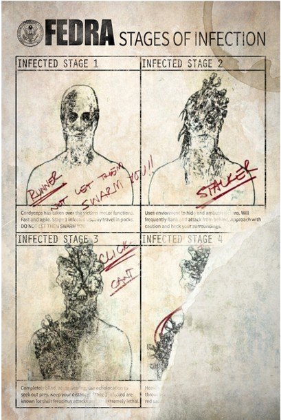

La pandemia global vista en The Last of Us Part 1 fue ocasionada por la Infección Cerebral por Cordyceps (CBI, del inglés Cordyceps Brain Infection) es una infección de tipo fúngica y parasitaria que se propaga a través de esporas del hongo (liberadas por infectados muertos o los que el hongo decida matar) o por mordidas de otras personas infectadas.
Consta de un total de 4 etapas, las cuales requieren de un tiempo necesario para transicionar de una a otra. Además de esto, ciertas condiciones pueden influir en estos procesos, agregando o restando etapas al ciclo de vida de un infectado, pero en generan podemos distinguir cuatro etapas:
La etapa uno comienza dentro de los dos días posteriores a la infección, en la que el huésped pierde su función cerebral superior (y con ella, su humanidad), lo que los vuelve hiperagresivos e incapaces de razonar o pensar racionalmente, aunque son conscientes de lo que ocurre pero no son capaces de hacer algo al respecto.
Dentro del juego, los infectados en esta fase son conocidos como Corredores, caracterizados por ser los enemigos por defecto del juego, siendo estos a su vez capaces de ser eliminados a golpes y en sigilo sin emplear una daga.
En dos semanas, el huésped ingresa en la etapa dos de la infección, en la que el hongo comienza a alterar su vista como resultado del crecimiento progresivo de hongos sobre la cabeza y la corrupción de su corteza visual. Estos infectados, denominados Acechadores, se encuentran en lugares oscuros y cerrados y son capaces de adherirse a las paredes para así permanecer ocultos frente a los ojos de sus próximas víctimas.
Este tipo de enemigo puede ser muy duro para los jugadores, ya que la dificultad que conlleva detectarlos puede ocasionar que lo único que escuchen en presencia de los acechadores sean los disparos de sus armas o sus propios gritos.
Después de un año de infección, la infección entra en la etapa tres; dejándoles cicatrices en la cara y cegándolos, lo que provocó que desarrollaran una forma primitiva de ecolocalización para compensar.
Estos enemigos parecerán anormales, pero lo cierto es que se hallan en gran parte del juego. Los Chasqueadores podrán no verte sin importar lo cerca que estés de ellos, pero no podrás golpearlos con tus puños ni derribarlos en sigilo sin una daga. Además del plomo, puedes usar objetos como ladrillos o botellas para generar ruidos y así dirigirlos a la posición que precises, ya sea para una trampa o para pasar de ellos.
En casos muy raros, si el anfitrión sobrevive durante más de una década, alcanza la etapa cuatro. Desarrollan placas fúngicas endurecidas sobre la mayor parte de su cuerpo que los hacen altamente resistentes a los ataques.
Estos imponentes y longevos infectados, llamados Gordinflones, son de gran tamaño, y, afortunadamente, son breves los enfrentamientos obligatorios que tiene el jugador con uno de ellos. Como podrás imaginar, no puedes ni siquiera acercarte a ellos y mucho menos derribarlos en sigilo sin importar lo que uses. Lo único que puedes hacer es preparar tus armas y materias primas para bombas caseras, ya que las vas a necesitar. Además, a diferencia de los otros infectados, no puedes liberarte de ellos una vez que te agarran.